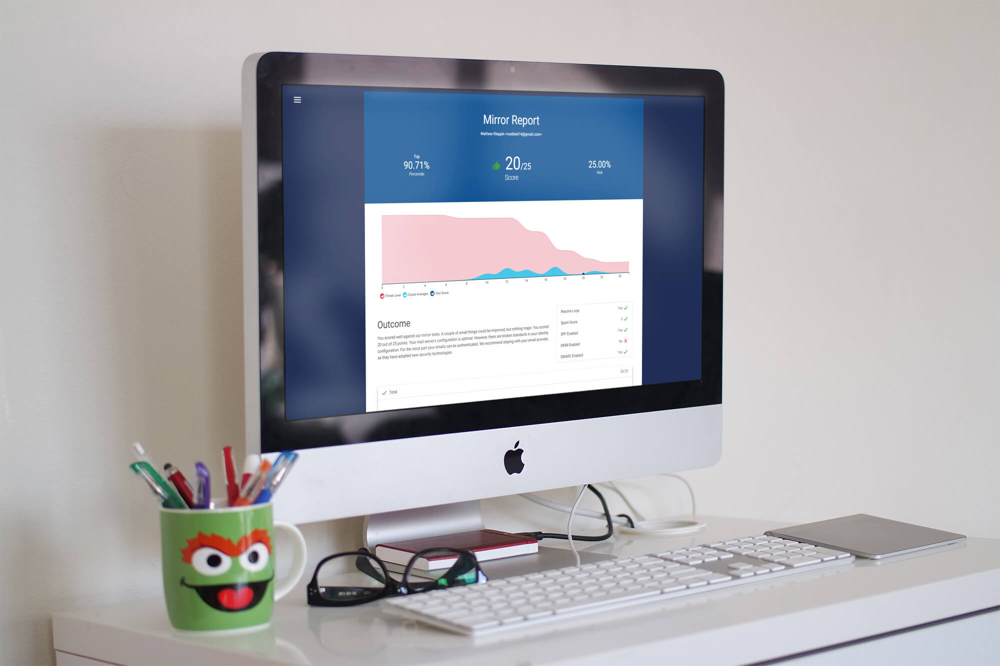

Magnises LLC
Senior Full-Stack Developer
At Magnises I worked on their main event platform, which included mobile apps (iOS and Android) and a MEAN stack web app. Over the period of a year, I rebuilt the entire stack to remove the acculated technical debt from 4 other developer studios that worked on them.
I joined Magnises as a part-time developer during the winter of 2015. At the time, they were transitioning from an internally based developement team to one that was state side, and everything was rather messy. Several developers, from different studios (and even countries), had been working on various peices of the puzzle with no central direction or coding style. I started making plans to standardize our coding style (we were a team of 4) and improve our communication with issue tracking.
One of the first things that was needed was to start building our test coverage. There were also no tests for any of our workflows and bugs poped up often. Our continuous integration was also prone to breaking. It a self-hosted black box that no one had access to and took anywhere from 30 to 45 minuets to deploy.
Over the course of the first 4 months, I wrote tests for around 60% of our workflows using AVA, and succesfully integrated CircleCI as our continous deployment service. This lowered deployment times to around 5 to 6 minuets, with included testing. This was on top of the various Angular feature development, API expansion, and solved bug reports.
It was around this time we made the move to github from bitbucket, and I was also hired as a full-time employee of the company. The move to github brought with it great issue tracking. Previously, the team was expected to keep track of their issues and tasks on a trello task board, which none of the other senior staff bothered to update.
With our development staff more productive, we decided we had the time to start building a new dashboard for the main company page. The main goal was to deal with the mess of scope soup by using a web component methodology. There were also some internal issues with the design that needed to be solved on our end.
The most recent large project I worked on at Magnises was adding reservations and a payment system to events. Reservation charges had been done manually by staff, and with an expanding user-base, things were getting very costly for us. It was the most challenging thing I had done so far due to the importance that we created a system that had a robust set of options for refunds, and also integrated into several new APIs. After 2 months of working on it (which included a new set of designs), it launched as a success, allowing the company to cut costs in that area by half.
One of the coolest things i've done at Magnises has been to integrate colored drop shadows, whose color was based off of the main event's image. On our new events pages, I extracted key colors in the image (most vibrant, a darker vibrant color, etc), and changed the button colors and icons on that page to create a theme arround the event.
TargetProof
Senior Web Developer
My work at TargetProof has allowed me to learn from some of the best in the security industry, and work along side them to design future focused products. I worked on several different product designs and built an email security auditing system. This now serves as the foundation of TargetProof's consulting business and generates leads for the sales team.
I started off at TargetProof as a contractor in 2012, implimenting a CMS into a design template. I transitioned quickly into doing branding work, as the company was in need for a solid brand identity to show off to investors. I had gained a few miscellaneous skills in college that helped me do various odd-jobs. From product videos built in Adobe After-Effects, to a unifiying style guide, most of everything got my designers touch.
At this stage in a start-up, it was important to have a product, and we didn't have anything yet. After being involved in some product design work, and after a few investor blunders, I decided to start work on TargetProof's Mirror, an email security analysis tool that would take an email, check the DNS configuration, and verify that the identity information provided was correct.

It was a lot of effort to get a prototype up-and-running, as it was a very complex beast to setup. There was a back-end node mailserver that needed to be re-written to cover most of our use-cases. Eventually though, this became our main platform at TargetProof.
Acapella Apps
Senior Web Consultant
Pretext